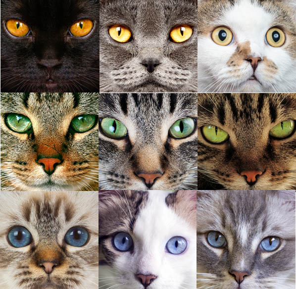

Gato, procedente del vocablo latino cattus, es un término que alude a un animal mamífero que forma parte del conjunto de los félidos: aquellas especies carnívoras que presentan patas posteriores con cuatro dedos y patas anteriores con cinco dedos; uñas retráctiles; hocico corto; y cabeza de forma redondeada.
CatsWebsite

¿Que son los gatos?
¿Cuantas razas existen?
La Asociación Internacional de Gatos (TICA) estima que hay 71 razas estandarizadas. La Cat Fanciers' Association (FCA) coloca este número en 44. Un total de 43 razas son reconocidas por la Fédération Internationale Féline (FIFe).
¿Por que un gato ronronea?
Generalmente, el ronroneo de un gato se asocia a la felicidad del felino. En muchos casos será así pero no hay una respuesta definitiva sobre ello: nerviosismo, estrés, miedo, ansia, felicidad, emoción, percepción de peligro. Lo hacen incluso cuando entran en sus últimos momentos de vida.
¿Por que un gato bufa y gruñe?
Los gatos bufan y gruñen cuando se sienten perturbados, amenazados o fuera de control. No viene de la nada y sólo hacen esto, cuando sienten la presencia de algún problema. Pueden incluso y aunque tu no representes una amenaza real, bufarte y gruñirte.
¿De que depende el color de los gatos?
En el caso de los gatitos cada célula está formada por 38 cromosomas, 19 del padre y 19 de la madre. Y por cada célula el padre aporta un gen y la madre otro. Esos genes pueden ser dominantes (que son los que determinan una característica concreta, en este caso el color del pelo) o recesivos (todo lo contrario).
